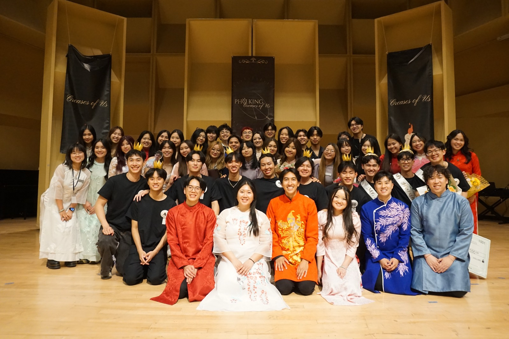
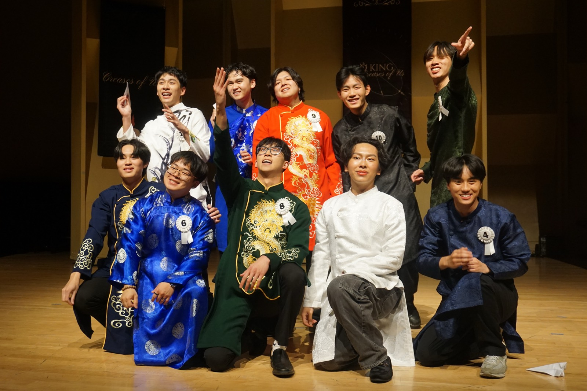
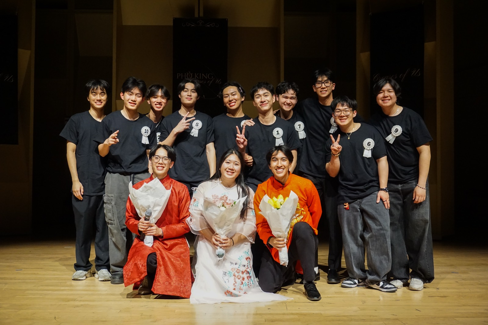

Phở King 2026: “Creases of Us”
Phở King is the Vietnamese Student Association at UW's cultural pageant. Two years after winning it as a contestant, I co-chaired it: I directed the production teams, coached the ten contestants, and choreographed and taught the show's opening dance.
- My role
- Creative Director · Show Co-Chair (one of three co-chairs); led the Show Day team
- Organization
- Vietnamese Student Association at UW (VSAUW)
- Team
- 40 people across five departments
- Timeline
- Nine-month production for the 2026 show
- Show
- 4 hours, 400+ attendees


- 400+attendees at a 4-hour show
- 10contestants coached over six months
- 5production departments, 40 people
- 30+sponsors
The show
The show centers on ten contestants, who spend six months preparing. Split into two groups of five, they write and perform two 15-minute skits; each one also presents a 5-minute passion portion (a talent or interest unique to them), and a closing round of questions lets the audience and judges get to know each contestant.
The dance team choreographed four dances for the show. I choreographed one of them, the opening piece, and taught it to the contestants. The others, including “Beautiful Monster,” ran between contestant segments as transitions and extra entertainment.
The 2026 theme, “Creases of Us,” used origami as a metaphor for self-identity: everyone's folds and creases are different, the path that got you here is your own, and there's no need to compare it with anyone else's.
My role
I was one of three co-chairs. I was the main point of contact for five production teams (Show Day, A/V, Media, Dance, and Logistics), each with 7–10 people split into three or four sub-teams, and I made sure every team stayed on track and had its materials ready for show day. I also led the Show Day team myself and was in charge of the contestants.
What I did
Production
- Tracked progress across all five teams through regular planning meetings and deadlines, as each team's single point of contact.
- Led the Show Day team: ushers, stage crew, door staff, and setting up and decorating the stage and check-in area.
- Coordinated what the A/V team needed for every skit, passion portion, and dance.
Contestant coaching
- Trained all ten contestants and gave feedback on every part of the show: skits, passion portions, dance, and the closing questions.
- Kept them on schedule with the Media team's photoshoots, video shoots, and interviews.
Choreography
- Choreographed the opening dance, a beginner-level piece, and taught it to the contestants.
- Mentored the dance intern who choreographed “Beautiful Monster,” one of the dances between contestant segments, and helped her build and teach it.
Funding
- Wrote and submitted grant applications with my two co-chairs and the treasurer, and managed the sponsorship effort.
Results
- A 4-hour multimedia show for 400+ attendees.
- $50K+ in grants secured.
- 30+ corporate sponsors managed, directing $27K toward nonprofit causes.
Dances
Opening dance. A beginner-level piece I choreographed and taught to the contestants.
“Beautiful Monster.” An advanced piece by the VSAUW dance team (open to anyone who tried out), performed between contestant segments. I mentored the dance intern who choreographed it, helped her build it, and co-taught it.
Videos play from YouTube in privacy-enhanced mode and load only when you press play.
Photos




Skills used
- Project management
- Cross-functional team leadership
- Event logistics
- Grant writing
- Sponsorship and fundraising
- Coaching and feedback
- Choreography and dance instruction
- Mentoring